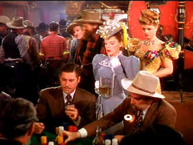

| Harvey Girls (SE)/ B+, B+ |
| Warner/1945/101/FS 1.33 |
Falling into the sub-genre of musical westerns, The
Harvey Girls is a glorious salute to the unsung masses who ventured
west to help civilize our lawless bawdy country. As railroads pressed
toward the coast, Fred Harvey's company established restaurants at
many stops helping to make the expansion more commodious. This
musical treat is about one stop along the Atchison, Topeka and the Santa
Fe , Flat Rock, where clean living aided and abetted by Harvey's
lovely ladies butts heads against the gartered girls of the Alhambra
saloon and the men who run the town their way.
Susan Bradley leaves her native Ohio for a
western love letter marriage from an ad placed by a man she's never met.
On the same train, The Harvey Girls are headed to the same destination,
Flat Rock, New Mexico.
In Flat Rock, Susan faces disappointment, new romance,
and the challenge of the establishment. Ned Trent runs the Alhambra Saloon
with a cavalier charm while associate Judge Purvis is determined to
preserve the status-quo by any means necessary. And Alhambra's leading
lady Em is ready to fight for her man. Between the bullets, booze and a
snake or two, Susan's solid down home Ohio values and determination give
her the strength to prevail. Happily, The Harvey Girls is a
musical, embellishing Susan's experiences with a grand dressing of music
and song and bringing the west to life through the ebullient production.
 |
|
Trent's last Harvey Girl.
©Warner
|
Thirty-year-old George Sidney had already
established himself as a strong musical comedy director Bathing Beauty
and Anchor's Aweigh when he was assigned to help create a musical
of a western script MGM had hanging around. His direction of The Harvey
Girls is outstanding, consistently finding the right camera point of
view and winning outstanding performances from his players. Sidney
directed later directed musicals from Annie
Get Your Gun to Showboat and Kiss Me Kate and action flicks
with verve and charm such as The Three Musketeers and Scaramouche.
There are many terrific musical moments, but the Atchison,
Topeka, and the Santa Fe production number stands out as simply
enthralling. Ray Bolger's specialty dance numbers are delightful, and
Virginia O'Brien is wonderful with the droll comic delivery on The
Wild, Wild, West. Judy Garland's solos are perhaps somewhat less
memorable, but she is absolutely wonderful in all the ensemble numbers.
Garland oozes winsome charm with innocent grace and
delicious spunk. I can't imagine anyone asking the Harvey Girls to listen
to her letter with such sweetness. Her centerpiece performance with
a talented musical supporting cast is amongst her best. John Hodiak may be
a pretty stiff specimen of a leading man, but the musical talents of Ray
Bolger, Virginia O'Brien, Kenny Baker. Even Angela Lansbury delivers the
good in her first musical work as dance hall queen Em.
Judy's opening number exhibits slight vocal distortion,
but it's the only time I noted the problem in the DVD production. The
transfer is very bright and consistently sharp. Black level is quite deep
with dark fabric details easily discernible. The color on Judy's lips is
so rich and vital it almost looks like a latex application that you could
peel right off your screen. Em's glittering gold lame outfit appointed
with ruby and emerald trim is a color showcase. The flesh tones have a
slight touch of too much yellow, like one of the Technicolor strips has
slightly faded. Aside from the opening, the mono sound is clear with nice
range.
Warner has packaged The Harvey Girls as a
wonderful special edition. Director George Sidney's audio commentary is
lively and warm sharing reminiscences about the production history and the
experience of making the film. The commentary is not always scene
specific, but the stories are thoroughly entertaining. There are three
deleted musical numbers including Judy singing My Intuition. These
are in beautiful condition. The original scoring session music cues are
accessible. The theatrical trailer for The Harvey Girls
completes the package. |
|
|
|

Selections from the Feature Archive include articles on Akira Kurosawa, Frank Darabont, Blonde Bimbos, Hollywood Street Gangs, or Vietnam: The Hollywood Pariah, and many
more....
Puttin on the Ritz

Fred Astaire and Cyd Charisse bring Silk Stockings to life, a
remake of Ninotchka, one of many films successfully turned into musicals
by the Hollywood dream factory. Read all about remakes into musicals by
clicking on the divine dancers.

Take a look at the merry images of America's gift to
the movies: Hollywood Musical Posters are featured
from The Movie Poster Archive.

A Star is Born/A,B

Judy Garland is brilliant in the great Hollywood tale of one star on the
rise and another sliding into the abyss. James Mason is wonderful
alongside Judy.


Mystery writer Fred Hunter digs into classic films on DVD. Check out his
insightful reviews at The Classics on DVD.

The National Film Preservation Foundation (NFPF) is the
nonprofit organization created by the U.S. Congress to save America's film
heritage.
 Have you visited
Home Theater
Talk lately? One of the friendliest places on the Net for Home
Theater and DVD discussion, you can get help for installation problems or
simply share your opinions with other Vidiots. Have you visited
Home Theater
Talk lately? One of the friendliest places on the Net for Home
Theater and DVD discussion, you can get help for installation problems or
simply share your opinions with other Vidiots.
 The Cinematheque is a cultural,
arts organization that programs year-round specialty film series at the
newly renovated, landmark 1922 Egyptian Theatre on
Hollywood Boulevard! The Cinematheque is a cultural,
arts organization that programs year-round specialty film series at the
newly renovated, landmark 1922 Egyptian Theatre on
Hollywood Boulevard!
|